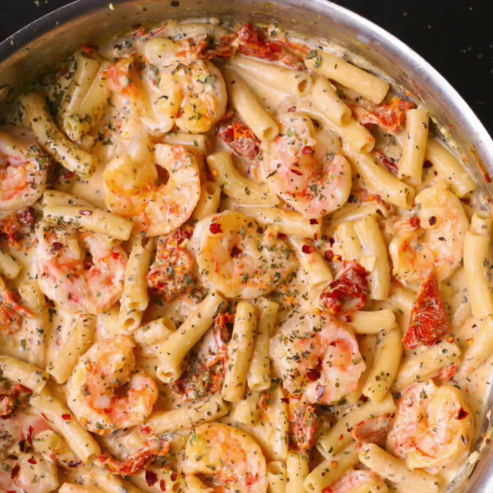
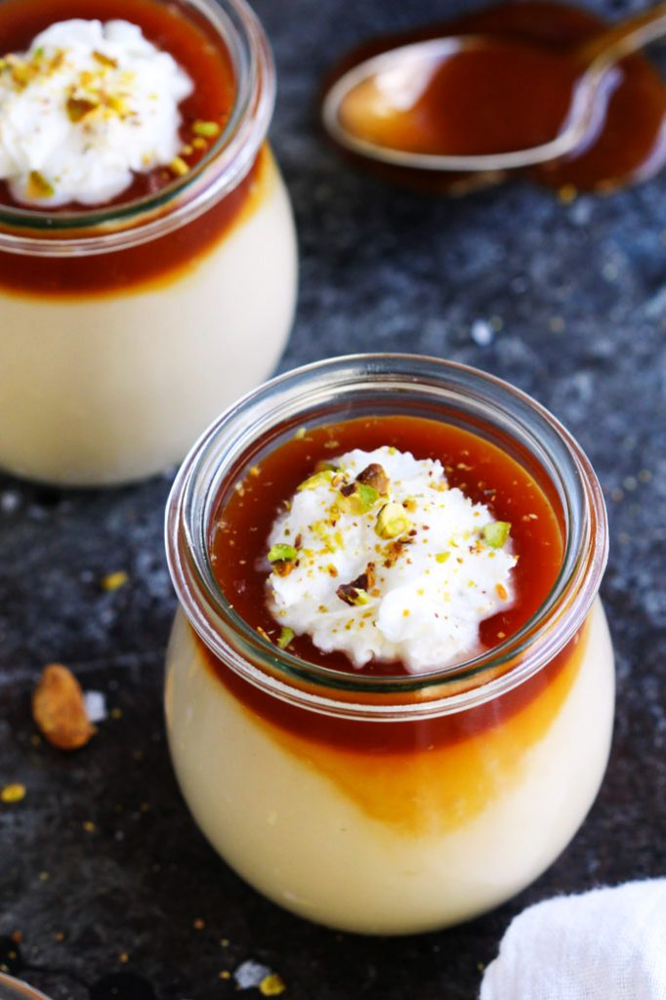

Creamy Mozzarella Shrimp Pasta

- Pasta
- 8 oz penne pasta (for gluten free, use gluten free brown rice pasta)
- Shrimp
- 2 tablespoons olive oil (drained from sun-dried tomatoes jar or just use regular olive oil)
- 1 pound shrimp, without shells, and deveined
- 3 large garlic cloves, minced
- 1/4 teaspoon salt
- Sauce:
- 1 small jar (3-4 oz) sun-dried tomatoes in oil, or use 3-4 oz oil-free sun dried tomatoes
- 4 large garlic cloves, minced
- 1 cup half and half
- 1 cup mozzarella cheese, shredded (never frozen)
- 1 tablespoon of basil (if using dry basil), if using fresh basil you can add more
- 1/4 teaspoon crushed red pepper flakes (at least, add more to taste)
- 1/8 teaspoon paprika
- 1/2 cup reserved cooked pasta water (or more)
- 1/4 teaspoon salt, or to taste
Prep time:
- Cook pasta according to package instructions. Reserve some cooked pasta water. Drain the pasta.
- Note: if using sun-dried tomatoes in oil (in a jar), make sure to drain sun-dried tomatoes from oil, before using them. Reserve 2 tablespoons of this drained oil for sautéing the shrimp.
- Heat 2 tablespoons olive oil (reserved from the sun-dried tomatoes jar - see note above, or use regular olive oil) in a large skillet on medium-high heat.
Add shrimp, minced garlic and cook the shrimp on one side for about 1 minute, until shrimp turns pink or golden brown on that side.
While it cooks, sprinkle the top of shrimp with salt to cover every single shrimp.
Make sure not to crowd the shrimp in the skillet, otherwise moisture will form and shrimp won't sear right.
After 1 minute, Flip the shrimp over to the other side and cook for about 30 seconds or 1 minute more. The shrimp should be golden color or pink on both sides and not overcooked.
- Remove the shrimp to a plate, being careful to leave all the oil in the skillet.
- To the same skillet, add sun-dried tomatoes (drained from oil and sliced into smaller chunks, if needed) and more minced garlic, and saute in olive oil (remaining from shrimp) on medium heat,
stirring, for 1 minute until the garlic is fragrant.
The skillet should be hot.
- Add half and half to the hot skillet with sun-dried tomatoes and bring to boil. Add shredded cheese to the skillet, and stir in while boiling.
Immediately reduce to simmer and cook, constantly stirring, until all the cheese melts and the creamy sauce forms.
If the sauce is too thick, add a small amount of half and half or reserved cooked pasta water. Add basil, crushed red pepper flakes, paprika. Stir.
- Add 1/4 teaspoon of salt gradually, stirring on low heat and tasting (you might need slightly less than 1/4 teaspoon).
- Add cooked pasta to the sauce, and reheat gently on medium heat. Add the cooked shrimp, stir it in. Taste, and add more salt, if needed.
Add a small amount of half and half or reserved cooked pasta water, if the sauce is too thick. Let everything simmer on low heat for a couple of minutes for flavors to combine.
- Note: Make sure to salt the dish just enough to bring out the flavors of basil and sun-dried tomatoes.
A nice desert to go with it.
Butterscotch Budino
